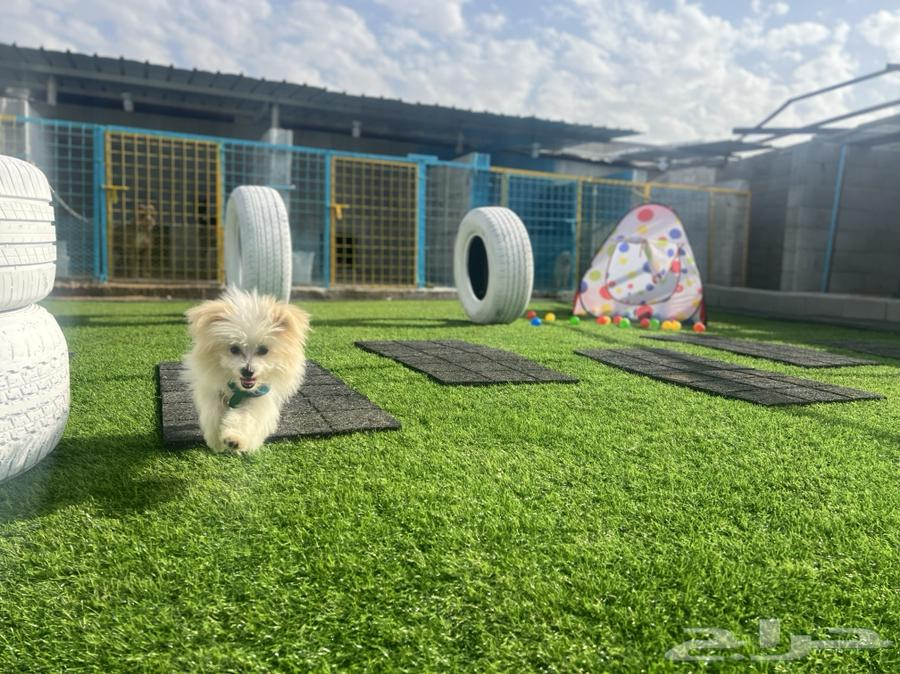
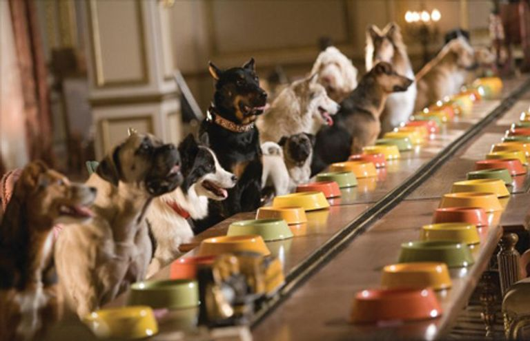
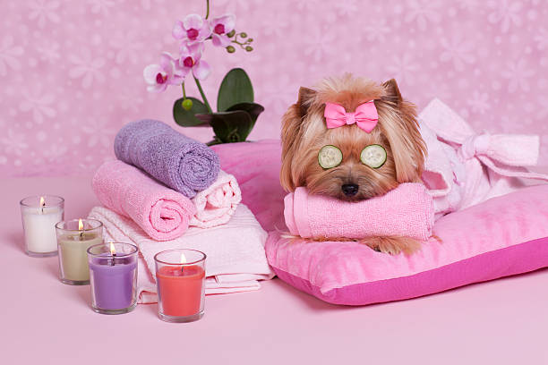
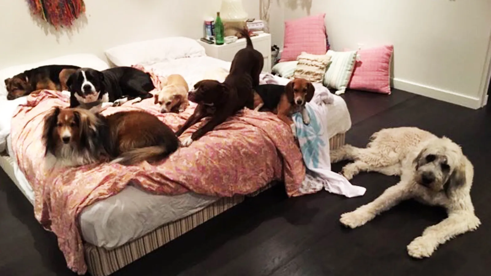
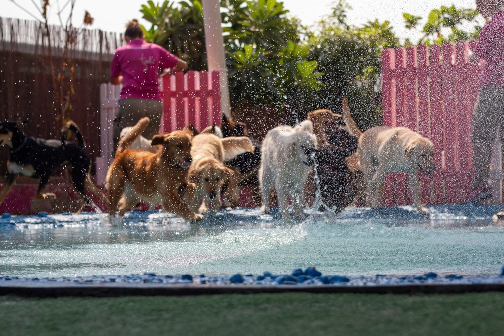
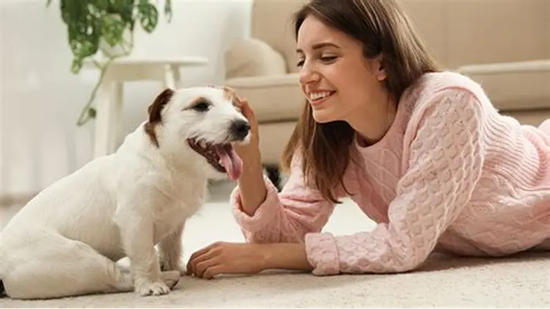
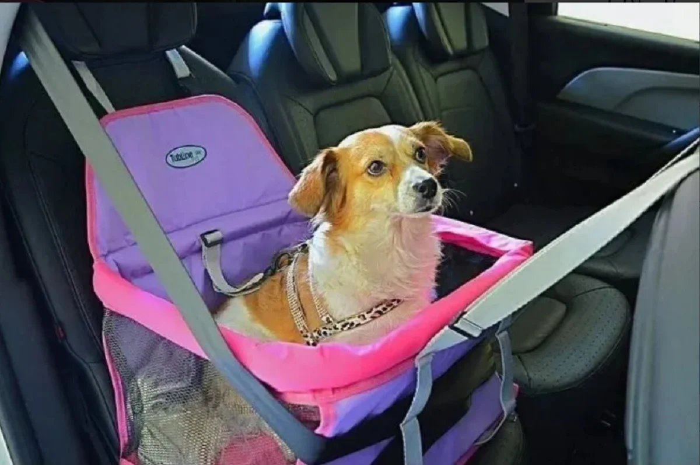
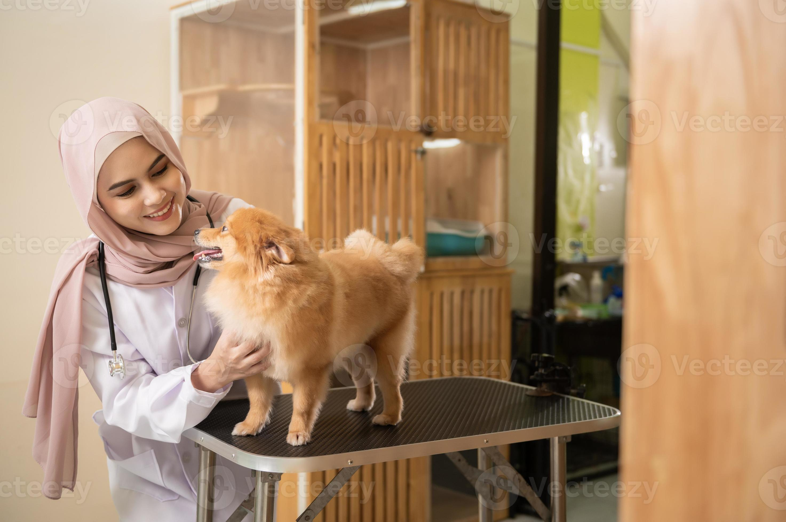

المرافق الخاصه

تدريب الكلاب
تدريب الكلاب في الساحات المفتوحة أو الحدائق في الأردن يُعتبر خياراً ممتازاً لتفريغ طاقة الكلب وتعليمه "التشتيت" حيث تتراوح تكلفة الجلسة الواحدة مع مدرب شخصي في الساحة بين 15 إلى 25 ديناراً وتستغرق الجلسة عادةً من 45 إلى 60 دقيقة (لأن الكلب يتعب أسرع في الهواء الطلق) ويفضل أن تكون في الصباح الباكر أو قبل الغروب لتجنب حرارة الجو هذا النوع من التدريب يركز على طاعة الأوامر وسط الضوضاء والكلاب وهو ما يضمن لك سيطرة كاملة على كلبك في الأماكن العامه مع ضرورة إحضار "التركيز" (Treats) وحبل تدريب طويل (Long Lead) لضمان سلامة الكلب أثناء التمرين.

وقت الطعام
تنظيم وقت طعام الكلاب في الاردن يعتمد على تقسيم الوجبات لضمان صحة الجهاز الهضمي حيث يحتاج الجرو الصغير حتى 6 اشهر لثلاث او اربع وجبات يوميا بينما يكتفي الكلب البالغ بوجبتين صباحية ومسائية تستغرق كل منها حوالي عشر الى خمس عشرة دقيقة لتناولها مع ضرورة الالتزام بالقاعدة الذهبية وهي تقديم الطعام بعد المشي او التدريب بثلاثين الى ستين دقيقة لتجنب التواء المعدة الخطير وتبلغ تكلفة الوجبة الواحدة من الدراي فود الجيد حوالي خمسة وسبعين قرشا الى دينار ونصف حسب حجم الكلب ويفضل رفع الصحن بعد عشرين دقيقة من وضعه لتعليم الكلب الانضباط الغذائي وتجنب جذب الحشرات خاصة في الاجواء الحارة

العنايه في الكلاب
العناية بظهر الكلاب في الاردن تتطلب تجنب القفز العالي من الكنبات او الدرج خاصة لانواع مثل الداتش هوند والجيرمن شيبيرد التي تعاني من مشاكل الديسك والفقرات وتكلفة فحص الظهر عند الطبيب البيطري تبدأ من عشرين دينارا بينما تصل صورة الاشعة لخمسة وثلاثين دينارا وتستغرق الزيارة نصف ساعة تقريبا وللحفاظ على صحة الظهر يجب توفير سرير طبي داعم وتجنب السمنة التي تزيد الثقل على العمود الفقري مع ضرورة المشي لمدة ثلاثين دقيقة يوميا لتقوية عضلات الظهر وفي حالات الاصابة المتقدمة يحتاج الكلب لجلسات علاج طبيعي تكلف الجلسة الواحدة حوالي خمسة وعشرين دينارا وتستمر لمدة اربعين دقيقة لضمان عودة الحركة بشكل طبيعي ومنع الشلل او الالتهابات المزمنة

وقت النوم
وقت نوم الكلاب في الأردن يتراوح بين اثنتي عشرة إلى أربع عشرة ساعة يومياً حسب النشاط البدني والعمر وتتوفر في عمان مراكز فندقة تقدم غرف مبيت تختلف أسعارها حسب عدد النجوم حيث تبدأ الغرف البسيطة فئة الثلاث نجوم بثمانية دنانير لليلة الواحدة وتستغرق عملية التسكين عشر دقائق بينما تصل أسعار الأجنحة الفاخرة فئة الخمس نجوم إلى عشرين ديناراً لليلة وتوفر مكيفات وشاشات وكاميرات مراقبة على مدار الساعة لضمان راحة الكلب التامة ويُنصح بضبط موعد النوم في الغرفة عند الساعة التاسعة مساءً لتنظيم الساعة البيولوجية وتجنب القلق الليلي الذي قد يسببه النباح المستمر في الأماكن المغلقة وتكلفة الإقامة الطويلة لمدة أسبوع قد تحصل فيها على خصم يصل لخمسة وعشرين بالمئة من السعر الإجمالي
.webp)
وقت التدريب رياضه للكلاب
وقت الرياضة والمشي للكلاب في الاردن يفضل ان يكون في الصباح الباكر او قبل الغروب لتجنب حرارة الرصيف وتتراوح تكلفة جلسة المشي مع مدرب او مرافق مختص بين عشرة الى خمسة عشر دينارا للساعة الواحدة وتستغرق الجلسة عادة من اربعين الى ستين دقيقة حسب سلالة الكلب وقدرته البدنية وتفيد هذه الرياضة الكلاب في تفريغ الطاقة الزائدة ومنع السلوك التخريبي داخل المنزل مثل عض الاثاث كما تقوي عضلات القلب والمفاصل وتحسن الحالة النفسية للكلب وتمنع السمنة المفرطة التي تسبب امراض السكري والديسك وتكلفة الاشتراك الشهري بواقع ثلاث حصص اسبوعيا قد تصل الى مئة دينار شاملة التوصيل في بعض مناطق عمان الغربية لضمان لياقة بدنية عالية والتخلص من التوتر الناتج عن الحبس الطويل في الشقق

اللعب والاستجمام
اللعب والاستجمام للكلاب في الاردن يفضل ان يكون في ساحات واسعة او حدائق مخصصة مثل حدائق الملك الحسين او المناطق المفتوحة في طريق المطار وتتراوح تكلفة جلسة اللعب الحر مع مدرب او مرافق بين عشرة الى خمسة عشر دينارا للساعة الواحدة وتستغرق الجلسة عادة من ستين الى تسعين دقيقة حسب طاقة الكلب البدنية ويفيد اللعب بالماء والسباحة في تخفيف حرارة جسم الكلب وتقوية مفاصله بدون الضغط عليها خاصة للكلاب التي تعاني من مشاكل الظهر وتكلفة دخول المسابح المخصصة للكلاب في عمان تبدأ من خمسة عشر دينارا للحصة الواحدة وتوفر هذه الانشطة تحسينا كبيرا في الحالة النفسية وتمنع الاكتئاب وتزيد من قدرة الكلب على الاختلاط بالبشر والكلاب الاخرى بذكاء اجتماعي عال وبدون عدوانية

مراقبة الكلاب المستمرة
خدمة المراقبة في الأردن تضمن لك الاطمئنان على أليفك عبر ربط هاتفك بنظام كاميرات ذكي متاح داخل الأجنحة والساحات العامة حيث تبدأ تكلفة هذه الخدمة من خمسة دنانير إضافية لليوم الواحد وتستغرق عملية إرسال كود الوصول دقيقتين فقط وتفيد هذه المراقبة في متابعة سلوك الكلب وحالته النفسية والتأكد من التزامه بمواعيد الأكل واللعب ويوفر المركز تقارير دورية عبر الواتساب تشمل صوراً وفيديوهات قصيرة خلال فترات النشاط اليومي لضمان راحة بال المالك خاصة في حالات السفر الطويلة خارج البلاد مع توفر طاقم مراقبة بشري متواجد فعلياً في الموقع على مدار الساعة للتدخل الفوري عند الحاجة.

خدمات التوصيل (Pet Taxi)
نوفر خدمة التوصيل الآمن للكلاب في كافة مناطق عمان والزرقاء بسيارات مجهزة ومكيفة لضمان عدم توتر الكلب أثناء الرحلة حيث تبدأ تكلفة التوصيل من سبعة دنانير للمشوار الواحد داخل عمان الغربية وتزيد حسب المسافة لتصل إلى عشرين ديناراً للمناطق البعيدة وتستغرق الرحلة عادة بين عشرين إلى خمسين دقيقة حسب حركة السير ويوفر السائق "بوكس" تنقل معقم أو أحزمة أمان مخصصة للكلاب الكبيرة لضمان سلامة الكلب من الحوادث وتعتبر هذه الخدمة حلاً مثالياً لأصحاب الكلاب المنشغلين الذين يحتاجون لنقل كلابهم إلى العيادة أو الفندق أو مراكز التدريب دون الحاجة للتواجد الشخصي مع توفر ميزة التتبع المباشر للرحلة.

الخدمات البيطرية المتكاملة
الرعاية الطبية داخل مركزنا في الأردن تشمل فحصاً شاملاً عند الدخول لضمان خلو الكلب من الطفيليات أو الأمراض المعدية وتكلفة الفحص الدوري العام تبدأ من خمسة عشر ديناراً وتستغرق الزيارة حوالي عشرين دقيقة ويوفر الطاقم الطبي خدمات التطعيم السنوية مثل المطعوم السداسي وسعار الكلب بأسعار تتراوح بين عشرة إلى اثني عشر ديناراً للمطعوم الواحد وفي حالات الطوارئ تتوفر خدمة الإسعاف الأولي السريع على مدار الساعة لضمان استقرار حالة الكلب قبل نقله للمستشفى المختص إذا لزم الأمر مع الاحتفاظ بسجل طبي إلكتروني لكل كلب يشمل مواعيد الأدوية والعلاجات الوقائية لضمان حياة صحية مديدة وخالية من الأوجاع المفاجئة.